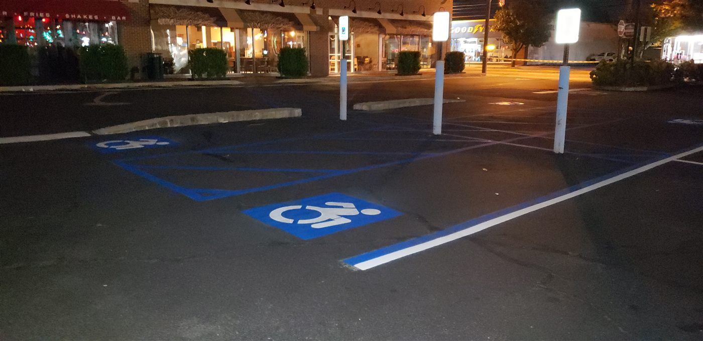

For a lot of businesses, the parking lot is not just where customers park. It is the business. Lose it for a day and you lose the day. That is the problem night striping solves, and it is one of the most requested things we do. We show up after you close, work under lights, and by the time the sun comes up the lot is dry, the lines are sharp, and not a single customer had to be turned away.
Why businesses choose to work overnight
Striping paint needs time to dry, and a freshly painted lot has to stay empty while it cures. During business hours that is a nonstarter for a busy retail plaza, a medical office, or a restaurant. Closing off sections during the day means lost parking, confused customers, and lost revenue. Doing it overnight erases that tradeoff entirely.
- Retail and shopping centers keep every space open through peak hours.
- Restaurants and bars avoid blocking the lot during their busiest evenings by scheduling after last call.
- Medical and office parks get a finished lot before the first patient or employee arrives.
- Multi-site property portfolios get standardized results without disrupting a single tenant.

"Very professional company. They came after I closed business so I can stay open and did a neat job. 100% will call them in future for redoing lot!" CW · Google Review · ★★★★★
Night work is often our cleanest work
There is a practical bonus to working at night that surprises people: the lines often come out better. No traffic to work around, no cars creeping through, no distractions. Cooler, calmer conditions and a completely empty lot let the crew focus on one thing, laying down straight, crisp, durable lines. It strips the job down to the machine, the paint, and the line.
By the time the sun comes up, the first car pulls into a space that was not there twelve hours ago.
How we schedule it
Every business runs on a different clock, so we build the schedule around yours. Weeknights, weekends, overnight, or the quiet early morning hours before you open, you tell us the window and we make it happen. For portfolios with several locations, we sequence the sites so each one is handled on its own low traffic night. If timing has been the reason you keep putting off a restripe, this is the answer. It also pairs perfectly with the warning signs in when to restripe your parking lot.
We handle night and after hours striping across all of Long Island and New York City, from single lots to full property programs.
NEVER LOSE A PARKING SPACE AGAIN.
Overnight and after hours striping across Long Island and NYC. Free, no obligation estimates.